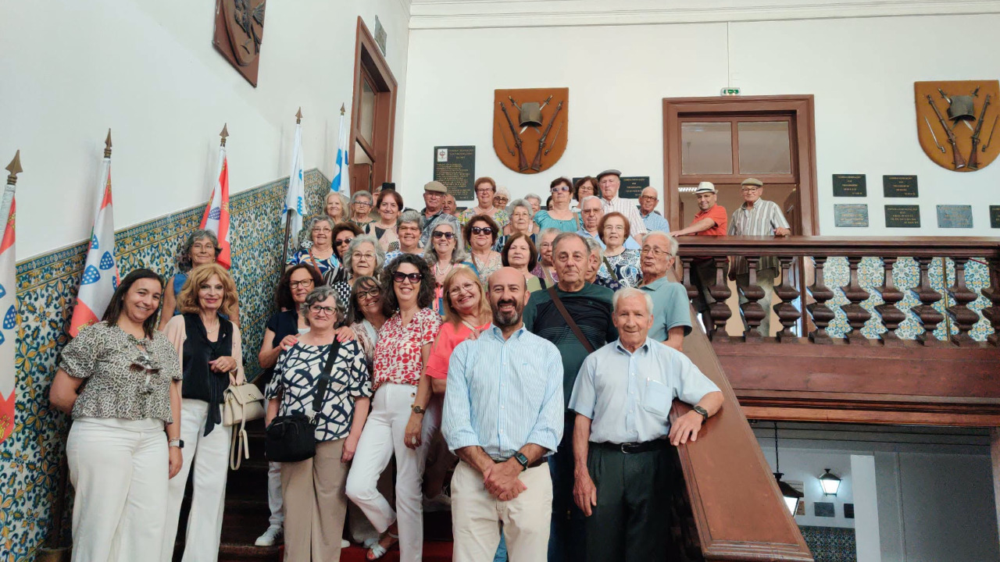
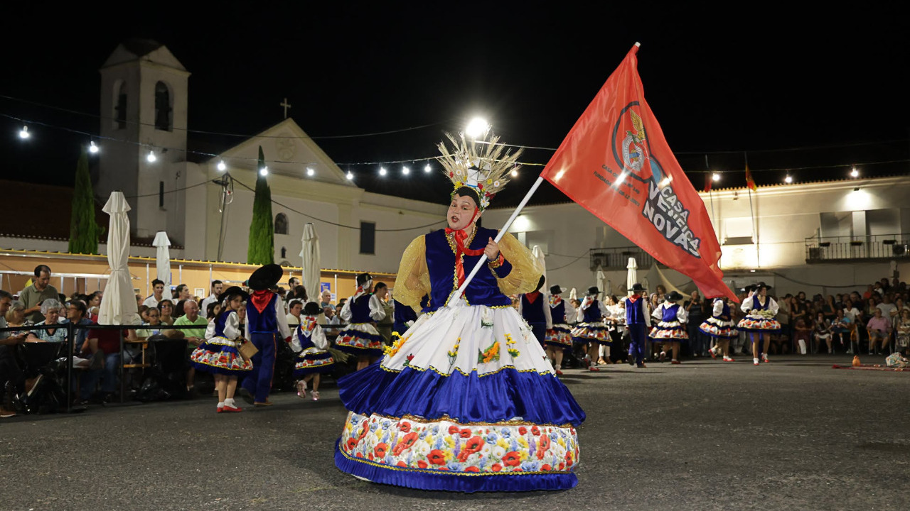

Junta de Freguesia de Vendas Novas
Serviços e Informação ao Cidadão
Serviços e Informação ao Cidadão
 Institucional
Institucional
A Junta de Freguesia de Vendas Novas assinou um novo acordo de valorização dos recursos humanos e melhoria das condições de trabalho.
 Ação Social
Ação Social
Comemoração e reconhecimento do papel fundamental dos dadores de sangue na nossa comunidade.

ComunidadeIniciativa dedicada à população sénior da freguesia com momentos de lazer e convivência.

EventosFestejos populares com música, gastronomia e animação para toda a família.
Conheça a história, património, heráldica, associativismo e pontos de interesse de Vendas Novas.
A origem do nome da Freguesia deve-se ao Duque de Bragança, D. Teodósio que, em 1540, juntou aos bens de seus irmãos duas vendas ou estalagens para sua pousada. O desenvolvimento de Vendas Novas esteve sempre profundamente associado à sua localização estratégica como ponto de passagem e descanso nas ligações do Alentejo e Espanha a Lisboa.
Bandeira: Amarela. Cordão e bordas de ouro e verde. Haste e lança de ouro.
Brasão: Escudo de verde, asna de ouro acompanhada em chefe por uma roda dentada de prata entre dois perfis de carril de ouro e, em campanha, por armação de moinho de negro vestida de prata e cordoada do mesmo.
Imagem Institucional: O azul liga a água do Chafariz Real ao céu e ao traço urbano alentejano; o cinzento confere estabilidade e dinamismo.
Conheça os principais monumentos, edifícios históricos e espaços verdes de Vendas Novas:
Monumento de elevado valor histórico ligado à antiga presença real.
Ex-líbris da freguesia mandado construir por D. João V.
Preservação da memória e tradição folclórica de Vendas Novas.
Zona de acolhimento e enquadramento paisagístico do concelho.
Espaço de lazer e convivência para a comunidade local.
O principal parque verde central para passeios e atividades de lazer.
Espaço museológico com a memória militar da unidade histórica de Vendas Novas.
Edifício emblemático associado às antigas passagens reais no Alentejo.
Património arquitetónico marcante no território da freguesia.
Conheça as associações e clubes ativas no concelho de Vendas Novas:
A Freguesia dispõe de estabelecimentos de ensino de excelência integrados no Agrupamento de Escolas de Vendas Novas:
Bombeiros Voluntários: 265 808 100
GNR Vendas Novas: 265 809 210
Centro de Saúde: 265 809 300
Câmara Municipal: 265 807 700
Acompanhe os eventos culturais, desportivos e comunitários em Vendas Novas ao longo de todo o ano.
Consultar Agenda OficialEncontre equipamentos públicos, monumentos, parques e serviços na freguesia.
Abrir Mapa no NavegadorAcompanhe em imagens as atividades, espaços e eventos de Vendas Novas.
 Chafariz Real
Chafariz Real
 Vendas Novas
Vendas Novas
 Vista da Freguesia
Vista da Freguesia
 Evento Comunitário
Evento Comunitário
 Iniciativa Local
Iniciativa Local
 Atividades e Reuniões
Atividades e Reuniões
 Ação de Freguesia
Ação de Freguesia
 Momentos Culturais
Momentos Culturais
 Registo de Atividade
Registo de Atividade
 Atividade Local
Atividade Local
 Encontro Cultural
Encontro Cultural
 Ação Comunitária
Ação Comunitária
Preencha os seus dados para submeter um pedido de atestado de residência ou prova de vida.
Ajude-nos a manter a freguesia limpa e segura. Reporte avarias na iluminação, vias de trânsito ou limpeza urbana.